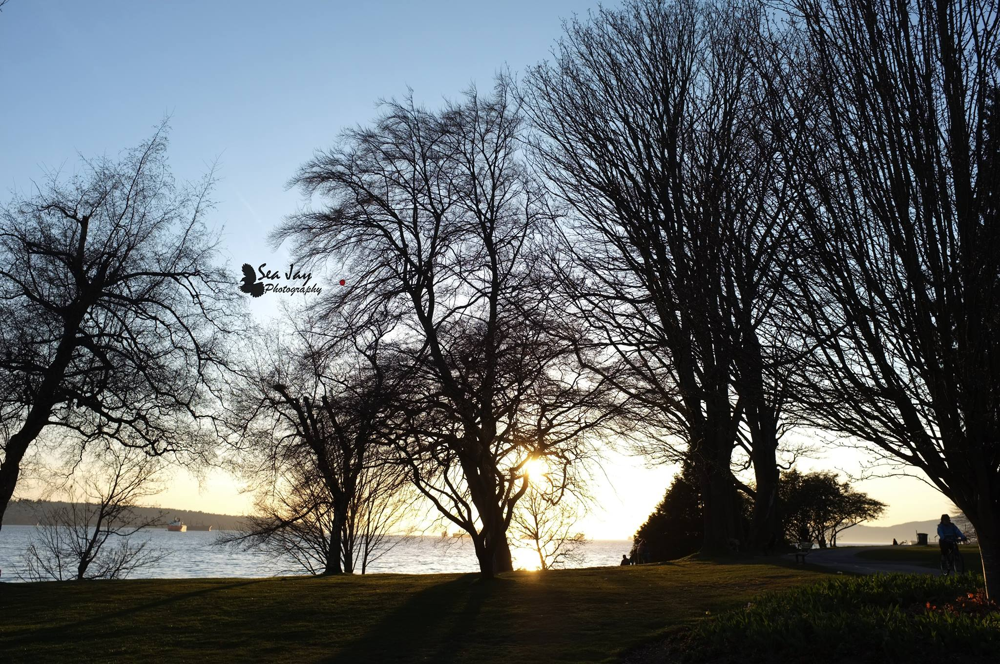
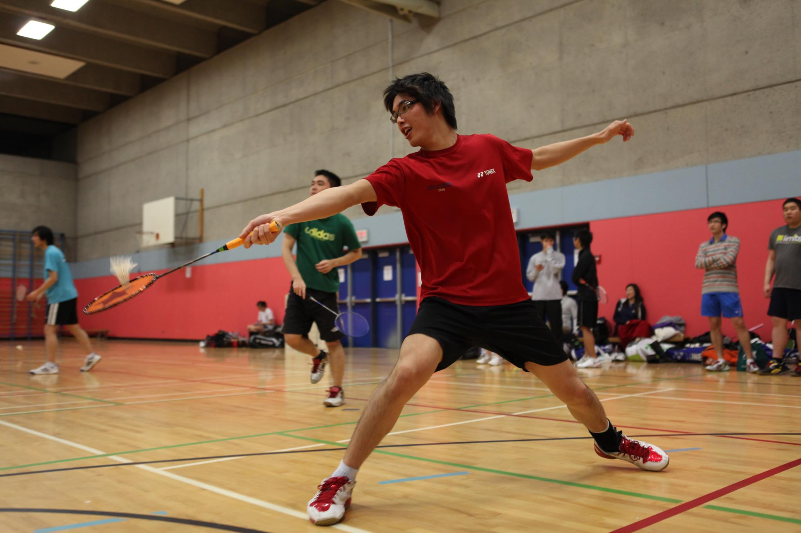
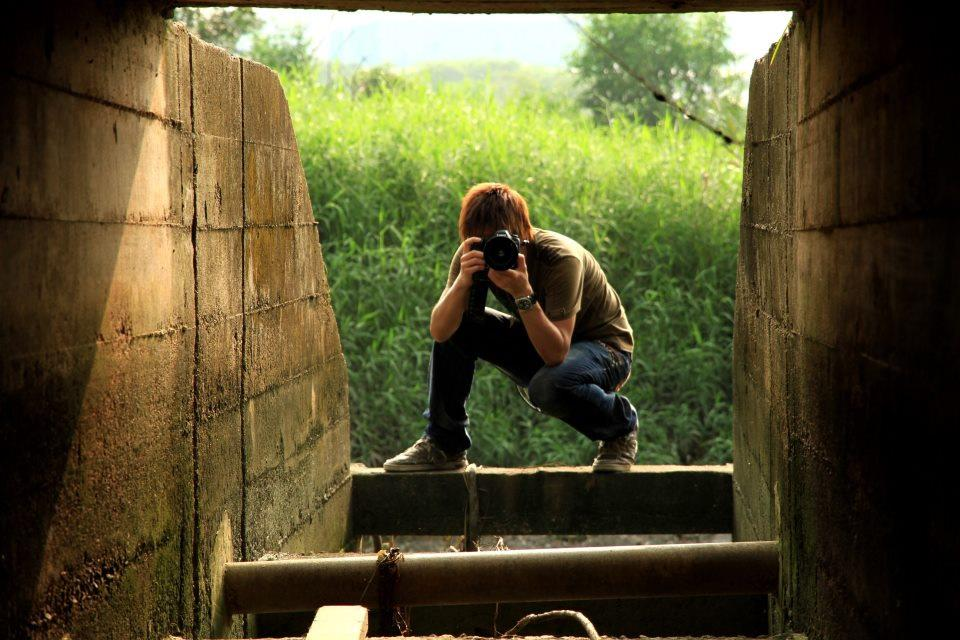

Hello, my name is Christopher J. Chan. I was born in USA, grew up in Hong Kong, and further studied in Canada. I'm a diverse individual who's passionate about new technology and technological advancements, and am always using and testing out the latest toys and gadgets. I decided to go into Web Development as my entry into tech from a non-technical background. I graduated with a degree in Economics, Sociology and Biopsychology, and after a couple tries at Private Banking, I realized that although lucrative, it didn't ignite any passion within me. When I found out about the Immersive Bootcamp programs, I jumped right into it and am excited to finally enter a tech related role. I also have a wide variety of hobbies, from photography to bowling, badminton and many more. I enjoy the learning process and strive to excel and be proficient in every new sport, hobby or skill, and have made achievements in many of them, most prominently in bowling, where I placed 2nd in U18 Hong Kong and have once been featured in the local news. I'm an energetic person who is easy to get along with. I also like UX/UI design and have some experience with Photoshop as I used to do Photography, so I'd be happy to work on UX/UI with a designer. I am also an avid researcher and knowledge seeker. I love to do my research and am proud of my extensive knowledge. If you hire me, I will bring my technical skills, knowledge, and new ideas to your company, along with a great team working personality and a willingness to try and learn anything!
Ongoing Project: Creating a Chatbot that interacts with users and helps them find information they need within a closed environment (Digital Library). Entire system works offline and is going to be implemented and used in Myanmar for NGO SolarLEAP. Have also created a chat environment ready for multiple users to use. Implemented and used Rocket.Chat, Hubot, Stanford CoreNLP, Solr, and Node.js
Project 3: Created a Recipe finder using Spoonacular API, Firebase, React and Redux. The app takes in ingredients and gives you recipes based on what you have.
Project 2: Created a Movie aggregator and used a web scraper to take data from multiple websites such as UA, MCL and Broadway. Still currently in development.
Project 1: Created a 2 Player artillery style Worms game utilizing collision detection, and a physics engine using JavaScript.